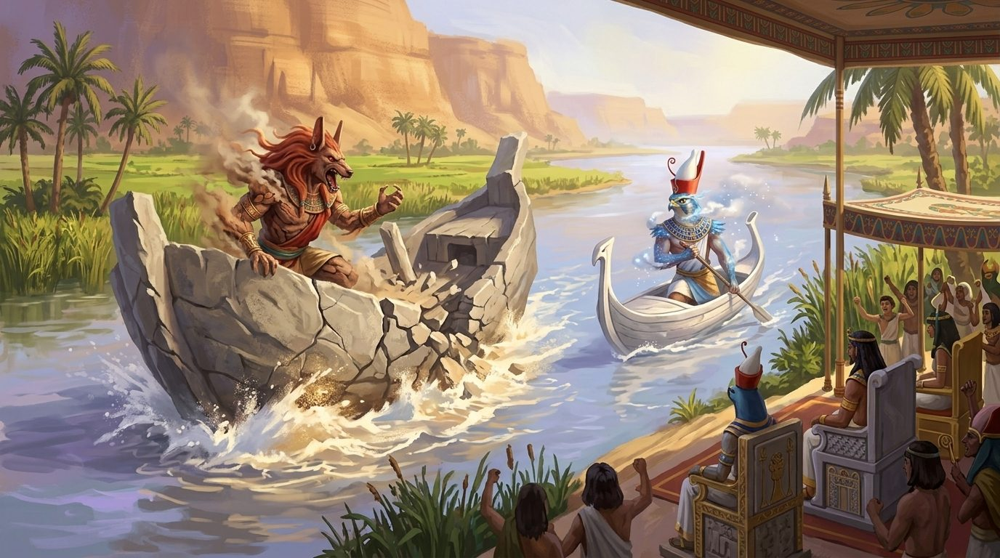
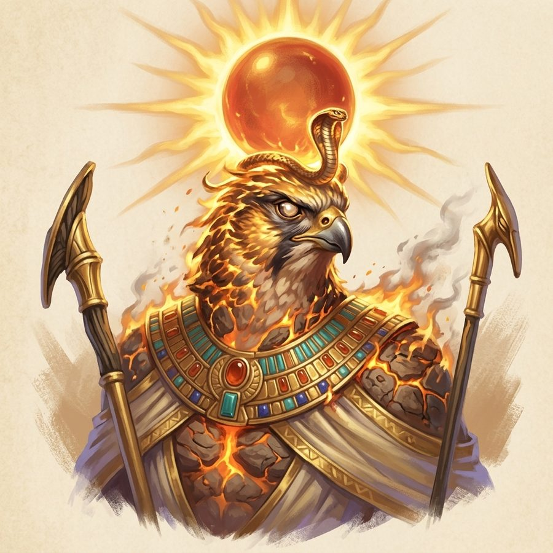
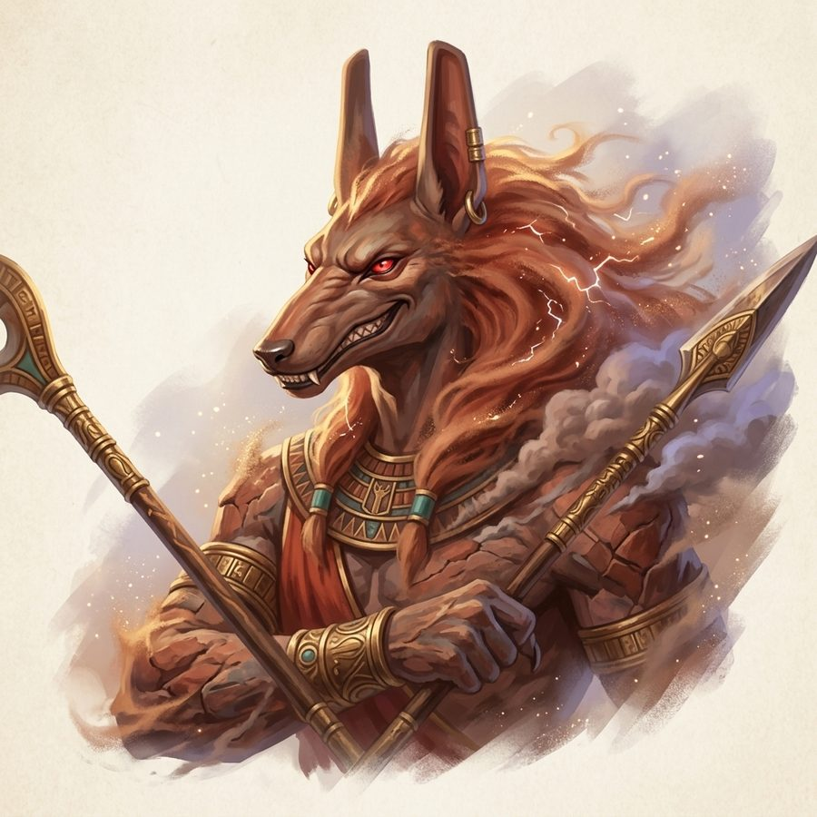
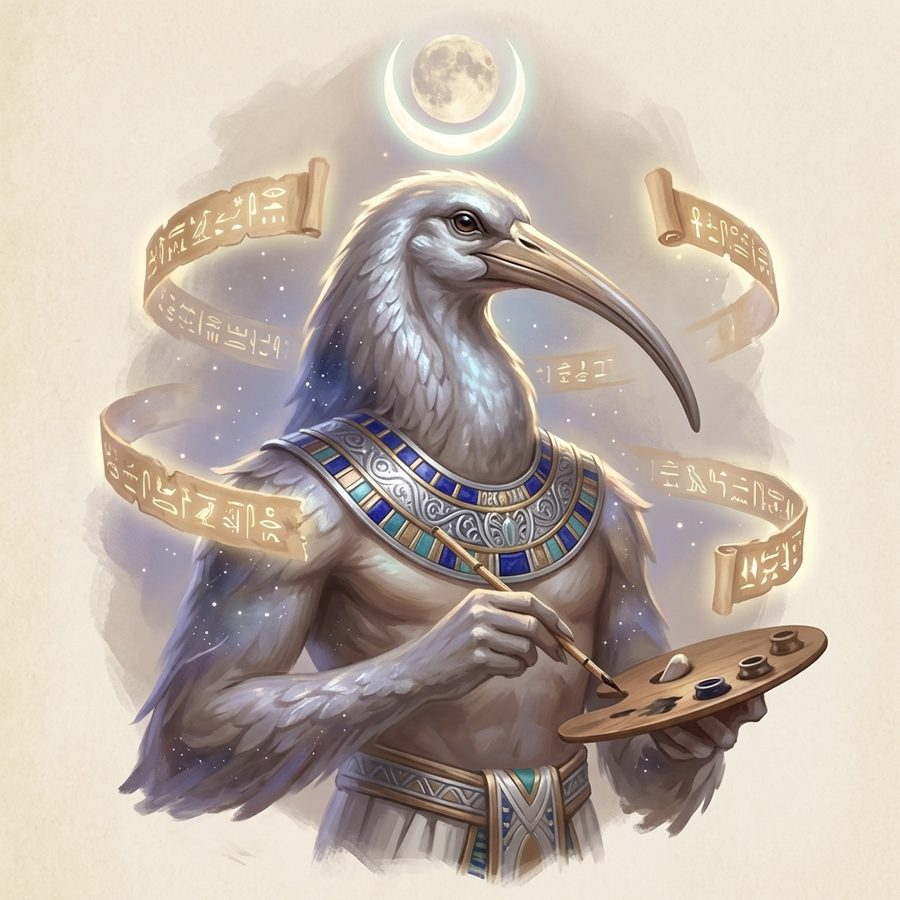
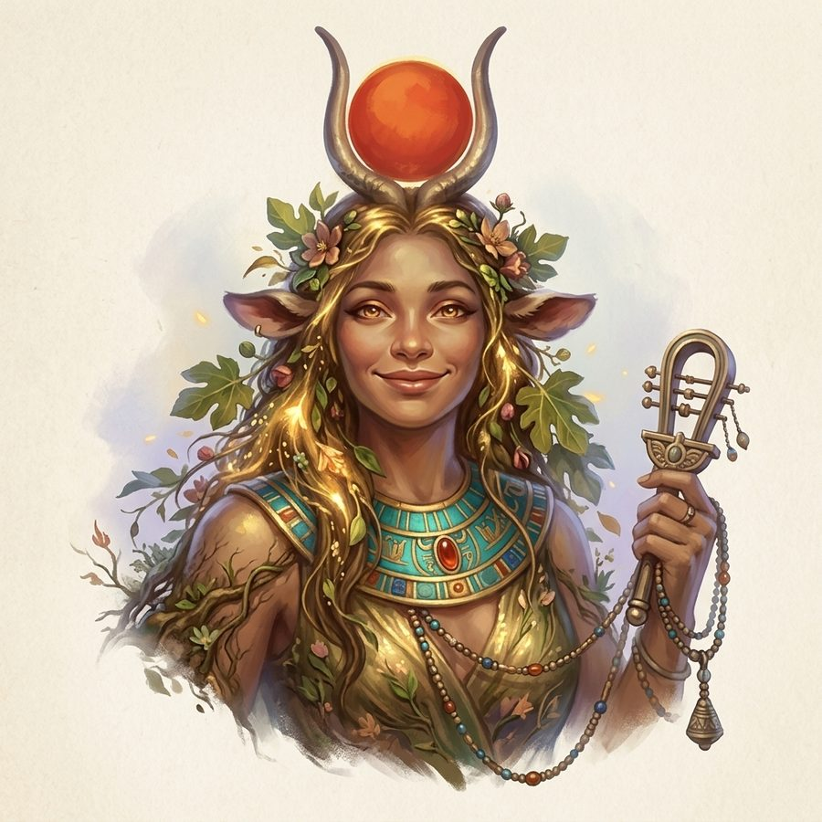
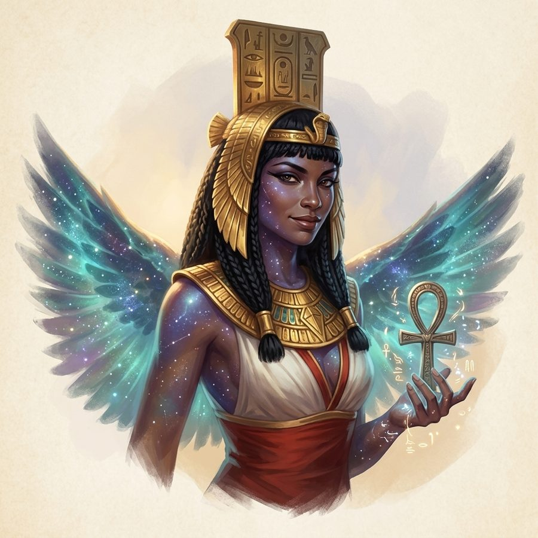
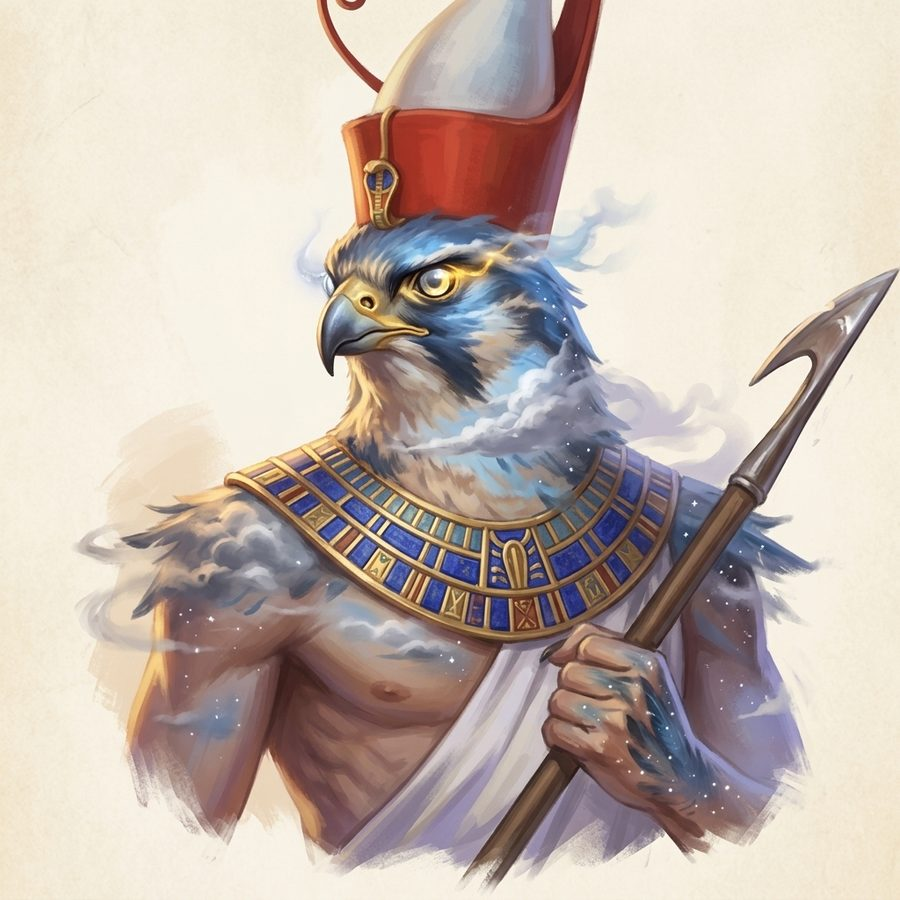

Egyptisch · · 18 min lezen
De rechtszaak van Horus en Seth
Tachtig jaar ruzie om de troon van Egypte

Dit verhaal begint na een moord.
Er was eens een koning van Egypte die Osiris heette. Hij was een god, en een goede koning. Hij had de mensen geleerd hoe ze gerst en emmertarwe moesten zaaien en oogsten, en het land was welvarend. Maar hij had een broer, Seth, en Seth was jaloers. Hij vermoordde Osiris. Volgens een van de bekendste versies sloot hij hem op in een kist en gooide die in de Nijl, en later scheurde hij het lichaam in stukken en verspreidde die over het land.
Isis, de vrouw van Osiris, zocht de stukken bij elkaar. Ze was de grootste tovenares van alle goden, en met haar spreuken bracht ze haar man nog één keer tot leven, lang genoeg om een zoon bij hem te krijgen. Daarna ging Osiris naar het Westen, naar het rijk van de doden, en werd daar koning.
De zoon heette Horus. Isis verborg hem in de moerassen van de delta, tussen het papyrusriet, waar Seth hem niet kon vinden. Daar groeide hij op.
En toen hij groot genoeg was, ging hij naar de goden en eiste de troon van zijn vader.
Het hof van de Negen

De rechtszaak werd gevoerd voor de Negen, de grote goden van Heliopolis, en hun voorzitter was de Heer van Alles: Ra, de zon. Hij had vele namen en vele gedaanten. Bij zonsopgang was hij Khepri, de mestkever die de zon over de rand van de wereld rolt. Midden op de dag was hij Ra-Horachte, met de kop van een valk en de zonneschijf op zijn hoofd. Bij zonsondergang was hij Atum, een oude man die moe naar het Westen ging. Hij was de oudste van alle goden en de schepper van de wereld. Maar hij was ook oud, en wat prikkelbaar.
Voor hem stond de jonge Horus, met de kop van een valk. Naast hem stond Seth.

Seth was de god van de woestijn en van de storm, van het rode land buiten de vruchtbare oevers, van de zandstorm en het onweer. Hij had de kop van een vreemd dier dat niemand kan thuisbrengen: een lange gebogen snuit, hoge rechthoekige oren en een rechte, gespleten staart. Hij was groot en sterk en luid. En hij was niet alleen maar slecht. Elke nacht, als de zon in zijn boot door de onderwereld voer, stond Seth op de voorsteven en vocht hij met de grote slang Apep, die de zon wilde verslinden. Geen andere god kon dat.
Shu, de god van de lucht, de zoon van Ra, sprak als eerste.
'Recht moet het winnen van kracht,' zei hij. 'Geef het ambt aan Horus.'
'Dat is recht, een miljoen keer!' riep Thoth, de schrijver van de goden.

Thoth had de kop van een ibis, met een lange gebogen snavel, en hij droeg altijd zijn schrijfpalet en zijn biezen pen bij zich. Hij was de god van de wijsheid, van het schrift en van de maan, en hij was de secretaris van het hof. Hij schreef op wat er gezegd werd en hij las de brieven voor.
Isis gaf een kreet van vreugde. Ze stond al op om de noordenwind te vragen het nieuws naar het Westen te brengen, naar Osiris.
Een andere god, de krijger Onuris, stelde voor om Thoth meteen de koninklijke naamring te laten halen en de witte kroon op het hoofd van Horus te zetten.
Toen zweeg Ra. Hij zweeg een lange tijd, en de goden zagen dat hij boos was.
'Wat is dat,' zei hij ten slotte, 'dat jullie op eigen houtje beslissen?'
Want de Heer van Alles had zijn eigen mening, en die zei hij niet hardop. Hij vond Horus maar een jongen. Hij had liever Seth, de sterke, op de troon.
Een brief aan Neith
Seth zag zijn kans. 'Laat mij met hem naar buiten gaan,' zei hij, 'dan zal ik jullie laten zien wiens hand de sterkste is.'
'Het is toch duidelijk onrecht,' zei Thoth, 'om het ambt van Osiris aan Seth te geven, terwijl zijn zoon hier staat?'
Zo ging het heen en weer. Er werd een oude ramgod bij gehaald, Banebdjedet uit Mendes, om te oordelen. Maar die wilde niet beslissen zonder te weten wat juist was.
'Laten we een brief schrijven aan Neith de Grote, de moeder van de goden,' zei hij. 'Wat zij zegt, dat doen we.'
De Negen zuchtten. Ze hadden hier al zo vaak over geoordeeld, in de zaal die 'Weg van de Waarheid' heette en in de zaal die 'Gehoornde Horus' heette. Maar goed. Thoth ging zitten met zijn palet en schreef een brief in naam van de Heer van Alles. Hij begon met een lange rij titels, zoals dat hoort. Daarna stond er: wat moeten we doen met deze twee? Ze staan al tachtig jaar voor het gerecht, en niemand weet hoe hij tussen hen moet oordelen.
Tachtig jaar. Zo lang duurde de rechtszaak al.
Neith schreef terug uit haar stad Saïs in de delta. Ze was een oude godin, ouder dan bijna alle anderen, een godin van de jacht en van de oorlog, met pijl en boog. Haar antwoord was kort en duidelijk.
'Geef het ambt van Osiris aan zijn zoon Horus. En houd op met dit soort onrecht, anders word ik boos, en dan stort de hemel neer op de aarde. Zeg tegen de Heer van Alles: geef Seth het dubbele van zijn bezittingen, en geef hem Anat en Astarte, uw twee dochters, als vrouw. En zet Horus op de troon van zijn vader.'
Thoth las de brief voor aan de Negen. 'Ze heeft gelijk,' zeiden ze allemaal.
De zon gaat liggen
Maar Ra was het er niet mee eens. Hij draaide zich om naar Horus en zei, kwaad: 'Jij bent zwak van lichaam. Dit ambt is te groot voor jou, jongen. Je hebt een vieze adem.'
Dat was te veel. Onuris werd woedend, en de hele raad van goden werd woedend, een miljoen keer. En toen stond een kleine, brutale god op, Baba, en hij zei tegen de Heer van Alles, de oudste god van de wereld, de zon zelf: 'Uw heiligdom is leeg.'
Dat was een grove belediging. Het betekende zoiets als: niemand komt meer bij u, u doet er niet meer toe, ga maar naar huis.
Ra was diep gekrenkt. Hij ging op zijn rug liggen, en hij mokte.
De Negen joegen Baba weg, want hij had een heel grote misdaad begaan. Maar het kwaad was al geschied. De rechtszaak lag stil. Iedereen ging terug naar zijn tent. De zon lag in zijn paviljoen op zijn rug, alleen, met een pijn in zijn hart, en wilde niemand zien.
Zo lag hij een hele dag.
Hathor

Toen kwam Hathor binnen, de Vrouwe van de Zuidelijke Sycomoor.
Hathor was de godin van de liefde, van de muziek, van de dans en van de dronkenschap. Ze werd afgebeeld als een vrouw met de hoorns van een koe en de zonneschijf daartussen, of als een koe zelf, of als een vrouw met koeienoren. Ze was de dochter van Ra, en ze kende haar vader.
Ze ging voor hem staan. Ze keek naar hem, oud en chagrijnig op zijn rug. En toen tilde ze haar kleed op en liet hem haar naakte schoot zien.
De zon lachte.
Hij lachte, en hij stond op, en hij ging weer bij de Negen zitten. 'Spreek maar,' zei hij tegen Horus en Seth. 'Zeg wat jullie te zeggen hebben.'
Een eiland zonder vrouwen
'Ik ben Seth,' zei Seth, 'de grootste in kracht onder de Negen. Elke dag dood ik de vijand van Ra, vanaf de voorsteven van de Boot van Miljoenen, en geen andere god kan dat. Ik moet het ambt van Osiris krijgen.'
'Seth heeft gelijk,' zeiden een paar van de goden.
'Moet je het ambt aan de oom geven,' riepen Onuris en Thoth, 'terwijl de zoon er is?'
'Moet je het ambt aan de jongen geven,' riep Banebdjedet, 'terwijl zijn oudere broer er is?'
Je merkt: soms is Seth de oom van Horus en soms zijn broer. Het verhaal doet daar niet moeilijk over.

Isis werd boos. Ze zwoer bij Neith en bij Ptah dat ze de zaak voor Atum en Khepri zou brengen, de hoogste van allemaal. De goden suste haar: 'Wees niet boos. Wie gelijk heeft, zal gelijk krijgen.'
Maar nu werd Seth boos, omdat de goden zo vriendelijk tegen Isis waren. 'Ik pak mijn scepter van vierduizend vijfhonderd pond,' zei hij, 'en ik sla er elke dag een van jullie mee dood. En ik ga niet verder met deze zaak zolang Isis erbij is.'
Ra had geen zin in meer ruzie. 'Steek over naar het Eiland in het Midden,' zei hij tegen de goden, 'en ga daar verder. En zeg tegen Nemty, de veerman: zet geen vrouw over die op Isis lijkt.'
De goden staken over naar het eiland midden in de rivier, gingen in de schaduw van de bomen zitten en begonnen te eten.
De veerman en de gouden ring
Een tijdje later kwam er een oude vrouw naar de oever waar Nemty met zijn veerboot lag. Ze liep krom, ze had een kom met meel bij zich, en aan haar vinger droeg ze een klein gouden zegelringetje.
'Ik kom om u te vragen me naar het eiland over te zetten,' zei ze. 'Ik moet deze kom meel naar een jongen brengen. Hij hoedt daar al vijf dagen het vee, en hij heeft honger.'
'Mij is gezegd: zet geen vrouw over,' zei Nemty.
'Dat is u gezegd vanwege Isis,' zei de oude vrouw. 'Ik ben Isis niet.'
Nemty dacht na. 'Wat geef je me, als ik je overzet?'
'Ik geef je dit brood.'
'Wat moet ik met jouw brood? Moet ik je overzetten voor een brood, terwijl mij gezegd is: zet geen vrouw over?'
'Dan geef ik je de gouden ring aan mijn vinger.'
'Geef maar hier,' zei Nemty. Hij nam de ring en zette haar over.
Je eigen mond heeft je geoordeeld
Op het eiland liep de oude vrouw onder de bomen door, tot ze de goden zag zitten. Ze aten met de Heer van Alles in zijn paviljoen. Seth zat erbij, en Seth keek op en zag haar in de verte.
Toen sprak Isis een spreuk. Ze veranderde haar gedaante, en ineens was ze geen oude vrouw meer, maar een jonge vrouw, zo mooi als er in het hele land geen tweede was. Seth stond op van de maaltijd en liep naar haar toe. Niemand anders zag het.
Hij ging achter een sycomoor staan en riep naar haar: 'Ik ben hier bij je, mooie vrouw.'
'Ach, mijn grote heer,' zei ze. 'Ik was de vrouw van een veehoeder, en ik heb hem een zoon gebaard. Mijn man is gestorven, en de jongen hoedt nu het vee van zijn vader. Maar er kwam een vreemde man. Hij ging in onze stal zitten en hij zei tegen mijn zoon: ik sla je, ik neem het vee van je vader, en ik gooi jou eruit. Daarom kom ik naar u. Wilt u mijn zoon beschermen?'
Seth hoefde er niet over na te denken.
'Moet je het vee aan een vreemde geven,' zei hij, 'terwijl de zoon van de man er is?'
Isis veranderde in een wouw, een roofvogel, en vloog naar de top van een acacia. Van daaruit riep ze naar beneden:
'Huil maar om jezelf! Je eigen mond heeft het gezegd. Je eigen verstand heeft je geoordeeld. Wat wil je nog meer?'
In het Egyptisch klinken de woorden voor 'vee' en voor 'ambt' bijna hetzelfde. Seth had zichzelf veroordeeld.
Hij ging huilend naar Ra. 'Die vrouw heeft me weer bedrogen,' zei hij. Hij vertelde wat er gebeurd was. Maar de Heer van Alles haalde zijn schouders op. 'Je hebt jezelf geoordeeld,' zei hij. 'Wat wil je nog meer?'
Seth wilde wel iets meer. Hij wilde dat Nemty gestraft werd. De veerman werd gehaald, en de Negen sneden de voorkant van zijn voeten af, zijn tenen. Sindsdien, zegt het verhaal, is goud een gruwel in de stad van Nemty, tot op de dag van vandaag.
Twee nijlpaarden
De goden staken weer over, naar de westelijke oever, en gingen op de berg zitten. 's Avonds kwam er een brief van Ra en Atum: 'Wat zitten jullie daar nu weer? Jullie laten die twee jongens hun hele leven in de rechtszaal slijten. Zet de witte kroon op het hoofd van Horus.'
De kroon werd op het hoofd van Horus gezet.

Maar Seth begon te schreeuwen. 'Wordt het ambt gegeven aan mijn jongere broer, terwijl ik, de oudere, er ben?' Hij zwoer een eed: hij zou de kroon van het hoofd van Horus slaan en hem in het water gooien. En de goden, die het nooit eens konden worden, namen de kroon weer af.
'Laten we in twee nijlpaarden veranderen,' zei Seth tegen Horus, 'en onder water gaan, midden in de rivier. Wie binnen drie maanden boven komt, krijgt het ambt niet.'
Ze veranderden in nijlpaarden en doken onder.
Isis zat op de oever en huilde. 'Seth gaat mijn zoon doden,' zei ze. Ze nam een streng garen en draaide er een touw van. Ze nam een stuk koper en goot er een harpoen van. Ze bond het touw aan de harpoen en gooide die in het water, op de plek waar de nijlpaarden waren gedoken.
De harpoen beet in het vlees van Horus.
'Help, moeder!' riep Horus. 'Zeg tegen je harpoen dat hij me loslaat. Ik ben Horus, je zoon!'
Isis riep naar de harpoen: 'Laat hem los! Dat is mijn zoon Horus!' En de harpoen liet los.
Ze gooide hem opnieuw, en deze keer beet hij in Seth.
'Wat heb ik je misdaan, zus?' riep Seth. 'Zeg tegen je harpoen dat hij me loslaat. Ik ben je broer, van dezelfde moeder. Houd je meer van een vreemde dan van je eigen broer?'
En Isis kreeg medelijden met hem. Hij was toch haar broer. 'Laat hem los,' riep ze naar de harpoen. 'Dat is mijn broer Seth, van dezelfde moeder.' En de harpoen liet ook hem los.
Horus wordt boos
Toen kwam Horus uit het water, en hij was woedend op zijn moeder. Zijn gezicht was zo wild als dat van een panter. In zijn hand had hij een mes van zestien deben. Hij hakte het hoofd van Isis af, nam het onder zijn arm en klom de berg op.
Isis veranderde in een beeld van vuursteen, zonder hoofd.
Ra zag het staan. 'Wie is dat, zonder hoofd?' vroeg hij aan Thoth.
'Dat is Isis, de grote, de moeder van de god,' zei Thoth. 'Haar zoon Horus heeft haar hoofd afgehakt.'
Ra gaf een schreeuw. 'Laten we hem zoeken en hem zwaar straffen!' En de Negen gingen de bergen in om Horus te zoeken.
Het verhaal zegt niet hoe Isis haar hoofd terugkreeg. Een paar bladzijden later loopt ze weer rond alsof er niets gebeurd is. Ze was een tovenares, en het verhaal heeft haast.
De ogen van Horus
Horus lag onder een boom in de woestijn, in het land van de oasen. Seth vond hem. Hij greep hem, gooide hem op zijn rug, rukte zijn twee ogen uit en begroef ze op de berg. In de nacht werden de oogbollen twee bloembollen, en de bollen groeiden uit tot lotusbloemen.
Seth ging terug naar Ra en loog: 'Ik heb Horus niet gevonden.'
Maar Hathor, de Vrouwe van de Zuidelijke Sycomoor, ging de woestijn in, en zij vond Horus, die lag te huilen. Ze ving een gazelle en melkte haar. 'Doe je ogen open,' zei ze tegen Horus, en ze druppelde de melk in zijn rechteroog en in zijn linkeroog. En zijn ogen waren weer heel.
Ze ging naar Ra. 'Horus is gevonden,' zei ze. 'Seth had hem zijn ogen afgenomen, maar ik heb hem weer beter gemaakt. Hier is hij.'
Het oog van Horus werd voor de Egyptenaren het teken van alles wat heel wordt na beschadiging. Ze droegen het als amulet, het wedjat-oog, en het werd een van de bekendste tekens van Egypte.
De sla in de tuin
Nu had Ra er genoeg van. 'Ga eten en drinken,' zei hij tegen Horus en Seth, 'en laat ons met rust. Houd op met die eeuwige ruzie.'
Seth deed alsof hij vrede wilde sluiten. 'Kom,' zei hij tegen Horus, 'laten we een feestdag vieren in mijn huis.' Horus ging mee. Ze aten en dronken, en 's avonds lagen ze samen op één bed.
In de nacht probeerde Seth iets wat het verhaal ronduit vertelt, maar wat hier kort mag blijven. Hij wilde Horus onteren, en zo bewijzen dat hij de sterkste was, de man die de ander de baas is. Maar Horus was slimmer dan hij dacht. Hij ving het zaad van Seth op in zijn handen, zonder dat Seth het merkte, en de volgende ochtend ging hij ermee naar zijn moeder.
Isis gaf een gil. Ze pakte haar mes, hakte de hand van Horus af en gooide die in het water. Toen maakte ze met haar tovenarij een nieuwe hand voor hem. En ze bedacht een list.
Ze nam wat zaad van Horus in een pot. 's Ochtends ging ze naar de tuin van Seth. 'Wat eet Seth hier?' vroeg ze aan de tuinman.
'Hij eet hier niets,' zei de tuinman, 'behalve sla.'
Sla was voor de Egyptenaren een plant van de vruchtbaarheid, met zijn witte, melkachtige sap. Isis smeerde het zaad van Horus over de slakroppen. Seth kwam, zoals elke dag, en at zijn sla.
Waar het zaad vandaan komt
Seth ging naar het hof, heel tevreden met zichzelf. 'Geef mij het ambt,' zei hij. 'Want wat Horus betreft: ik heb hem als een man behandeld.'
De Negen schreeuwden het uit. Ze spogen voor Horus op de grond.
Maar Horus lachte. 'Alles wat Seth zegt is gelogen,' zei hij. 'Laat het zaad van Seth geroepen worden, en laten we zien waar het antwoordt. En laat mijn zaad geroepen worden, en laten we zien waar het antwoordt.'
Thoth legde zijn hand op de arm van Horus en zei: 'Kom eruit, zaad van Seth.' En het zaad antwoordde: van ver weg, uit het water in het moeras, waar Isis het had gegooid.
Toen legde Thoth zijn hand op de arm van Seth en zei: 'Kom eruit, zaad van Horus.'
'Waar moet ik uitkomen?' vroeg het zaad.
'Kom uit zijn oor,' zei Thoth.
'Moet ik uit zijn oor komen,' zei het zaad, 'ik, die het zaad van een god ben?'
'Kom dan uit zijn voorhoofd,' zei Thoth.
En het kwam naar buiten uit het hoofd van Seth, als een gouden zonneschijf.
Seth werd razend. Hij greep ernaar, om de schijf te pakken, maar Thoth was sneller. Hij nam de gouden schijf en zette hem als kroon op zijn eigen hoofd. Op afbeeldingen draagt Thoth vaak een schijf op zijn hoofd, maar dan is het de maan.
'Horus heeft gelijk,' zeiden de Negen, 'en Seth heeft ongelijk.'
De boten van steen
Maar Seth gaf het niet op. Hij zwoer een grote eed: 'Hem zal het ambt niet gegeven worden voordat hij met mij een wedstrijd heeft gevaren. Laten we boten van steen bouwen en tegen elkaar varen. Wie wint, krijgt het ambt.'
Horus ging aan het werk. Hij bouwde een boot van dennenhout en bestreek die met witte gips, zodat hij eruitzag als steen. Hij liet hem 's avonds te water, toen niemand keek.
Seth zag de witte boot liggen en dacht dat hij van steen was. Hij ging naar de berg, hakte er een top van af, en bouwde daaruit een boot van honderdachtendertig el lang, van echte steen.
Ze gingen allebei aan boord, voor de ogen van de Negen. En de boot van Seth zonk.
Seth veranderde opnieuw in een nijlpaard, en hij ramde de boot van Horus kapot. Horus greep zijn harpoen en wilde die in Seth stoten, maar de Negen riepen: 'Niet slaan!'
Horus had er nu genoeg van. Hij nam zijn scheepsspullen, voer de rivier af naar Saïs en ging naar Neith. 'Laat er tussen mij en Seth geoordeeld worden,' zei hij. 'We staan al tachtig jaar voor het gerecht, en niemand weet hoe hij moet oordelen. Ik heb gelijk gekregen in de zaal Weg van de Waarheid, in de zaal Gehoornde Horus, in het Rietveld en bij de Veldvijver. En nog krijg ik het ambt niet.'
Een brief aan de doden
Toen deed Thoth een voorstel dat iedereen al tachtig jaar eerder had kunnen bedenken.
'Laten we een brief sturen aan Osiris,' zei hij, 'zodat hij tussen de twee jongens kan oordelen.'
Thoth schreef een brief, vol titels, naar het rijk van de doden. Osiris las hem en schreeuwde het uit. Hij schreef meteen terug.
'Waarom wordt mijn zoon Horus bedrogen? Ik ben het die jullie sterk heeft gemaakt. Ik ben het die de gerst en de emmertarwe heeft gemaakt, om de goden te voeden en het vee, terwijl geen enkele god dat kon.'
De brief kwam bij Ra aan, die met de Negen in het Witte Veld zat. Ra liet Thoth een kortaf antwoord terugschrijven: 'Als jij er nooit was geweest, als jij nooit geboren was, dan was er ook gerst en emmer geweest.'
Toen schreef Osiris een tweede brief. En die was anders.
'Alles wat jullie gedaan hebben is heel mooi,' schreef hij. 'Maar het recht is weggezonken in de onderwereld. Kijk nu eens goed naar de zaak. Het land waar ik woon, is vol boden met woeste gezichten, en ze zijn voor geen enkele god bang. Ik kan ze naar buiten sturen, en ze brengen me het hart van iedereen die kwaad doet. Wie van jullie is sterker dan ik? Toen Ptah de hemel maakte, zei hij tegen de sterren: jullie gaan elke nacht ter ruste in het Westen, waar koning Osiris is. En na de goden zullen ook alle mensen gaan rusten waar ik ben.'
Iedereen gaat dood. Ook de goden gaan elke avond onder. En dan komen ze allemaal bij Osiris.
Thoth las de brief voor. Het werd stil. 'Hij heeft gelijk,' zeiden de Negen. 'Hij heeft in alles gelijk.'
Seth gaat de hemel in
Seth probeerde het nog één keer. 'Laat ons naar het Eiland in het Midden gaan, dan zal ik met hem strijden.' Maar ook daar kreeg Horus gelijk.
Toen liet Atum Isis halen, en zei: 'Breng Seth hier, geboeid.' Isis bracht hem, met boeien om.
'Waarom heb je je verzet tegen het oordeel?' vroeg Atum. 'Waarom wilde je het ambt van Horus hebben?'
En Seth, na tachtig jaar, gaf toe. 'Nee, mijn goede heer,' zei hij. 'Laat Horus, de zoon van Isis, geroepen worden, en geef hem het ambt van zijn vader Osiris.'
Horus werd gehaald. De witte kroon werd op zijn hoofd gezet, en hij werd op de troon van zijn vader Osiris gezet. Ze zeiden tegen hem: 'Jij bent de goede koning van Egypte, de heer van alle landen, voor altijd en eeuwig.' Isis gaf een luide kreet van vreugde.
Maar wat moest er met Seth gebeuren? Ptah vroeg het, en Ra gaf het antwoord.
'Geef mij Seth, de zoon van Nut,' zei hij. 'Laat hij bij mij wonen, als mijn zoon. Hij zal donderen in de hemel, en iedereen zal bang voor hem zijn.'
Zo kreeg Seth toch een plek. Niet op de troon, maar in de lucht, als de stem van het onweer. En elke nacht stond hij weer op de voorsteven van de boot van de zon, met zijn speer tegen de slang.
De goden vierden feest. Isis zong een lied: Horus is opgestaan als heerser, hij heeft het ambt van zijn vader gekregen. Heel Egypte juichte.
Onder aan de papyrus heeft de schrijver gezet: het is goed afgelopen, in Thebe, de plaats van de waarheid.
Achtergrond
Waar komt dit verhaal vandaan? Van één papyrus, de Papyrus Chester Beatty I, geschreven rond 1150 voor Christus, in de tijd van farao Ramses V. Hij komt uit Thebe, het huidige Luxor, waarschijnlijk uit Deir el-Medina, het dorp van de ambachtslieden die de graven in het Dal der Koningen bouwden. Daar woonde een schrijver met een eigen boekenverzameling. De papyrus werd in 1931 uitgegeven door de Britse egyptoloog Alan Gardiner en hoort nu bij de Chester Beatty-bibliotheek in Dublin.
Een grappig verhaal over goden. Wie Egypte kent van piramides, mummies en plechtige tempels, kijkt misschien op van dit verhaal. De goden mokken, liegen, laten zich omkopen, en geven elkaar scheldnamen. Onderzoekers verschillen van mening over wat dit was. Een verhaal om bij een feest voor te lezen? Een spot op de rechtbanken en het hof van die tijd, waar zaken eindeloos werden uitgesteld? Waarschijnlijk wel allebei. De oude mythe van de strijd tussen Horus en Seth is in elk geval veel ouder: ze staat al in de Piramideteksten, de oudste religieuze teksten van Egypte, ruim duizend jaar eerder.
Horus en de farao. Elke farao was Horus op aarde. Als een koning stierf, werd hij Osiris in het rijk van de doden, en zijn opvolger werd de nieuwe Horus. Dit verhaal gaat dus ook over iets heel echts: wie de troon krijgt na de dood van een koning. De zoon, of de sterkste?
Seth. In dit verhaal is Seth een opschepper en een bedrieger, maar geen echte schurk. Lang werd hij ook gewoon vereerd, vooral in het zuiden en in de woestijn. Er waren zelfs farao's die naar hem genoemd werden, zoals Seti, de vader van Ramses de Grote. Pas later, toen Egypte telkens door buitenlanders werd veroverd, werd Seth steeds meer de god van het kwaad en van de vreemdelingen, en werden zijn beelden en zijn naam weggehakt.
De moord op Osiris. Het begin van dit verhaal, de moord en de kist, staat niet in deze papyrus. De Egyptenaren schreven die gebeurtenis nooit helemaal uit, misschien omdat het onheil bracht om over de dood van een god te schrijven. De bekende versie met de kist komt van de Griek Plutarchus, rond 100 na Christus.
Bronnen
- Horus and Seth (Papyrus Chester Beatty I), vertaling van Miriam Lichtheim in Ancient Egyptian Literature, deel II (1976), via archive.org
- The Contendings of Horus and Seth, Wikipedia, over de papyrus